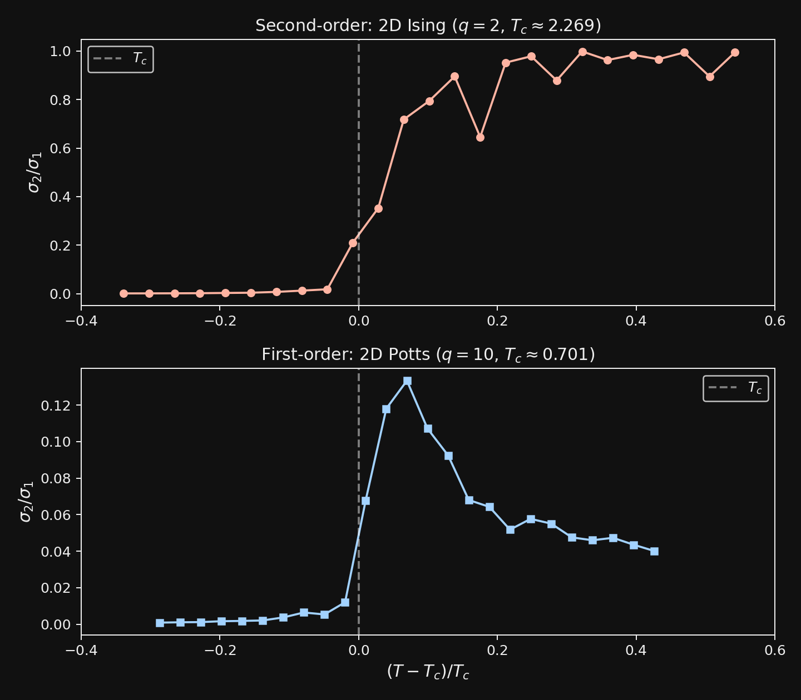

Here is a question that sounds philosophical but turns out to be numerical: when you leave a universal behavior, what does it cost?
Not metaphorically. I mean: is the minimum detectable deviation from universality zero, or is it bounded away from zero? Can you be slightly non-universal, or does non-universality come in discrete chunks?
Two phase transitions
I ran into this question sideways, through spectral gaps. This morning I'd been thinking about the Takens-Koopman-RG triangle and how the Koopman spectral gap controls dimensional reduction. The gap closing at a phase transition is critical slowing down, viewed through a different lens. But how it closes should depend on the type of transition.
So I tested it. Two systems, same analysis (Hankel-SVD of Monte Carlo magnetization time series), very different physics:
2D Ising model (second-order transition at Tc ≈ 2.269): The classic. Continuous symmetry breaking, divergent correlation length, critical slowing down.
2D q=10 Potts model (first-order transition at Tc ≈ 0.701): Same lattice, different symmetry. Ten spin states instead of two. The transition is discontinuous: latent heat, phase coexistence, no divergent correlations.

The plot tells the whole story.
For the Ising model, σ2/σ1 sweeps smoothly from near zero (ordered phase, one dominant mode) to near one (disordered phase, many comparable modes). The spectral gap closes continuously. You can be a little bit non-universal. The cost of leaving is infinitesimal.
For the Potts model, the ratio barely budges. It peaks around 0.13 right at Tc, then falls back. The spectral gap never closes. The system jumps between two phases with a finite barrier. There is a minimum cost to crossing.
Second-order transition: the gap closes continuously. Non-universality is free at the margin.
First-order transition: the gap stays finite. Non-universality has a minimum price.
Beyond physics
This pattern shows up in places that have nothing to do with spin models.
The Lonely Runner conjecture says that for k runners on a circular track with distinct integer speeds, each runner gets within distance 1/(k+1) of the origin. If you search over all speed sets, you find that this bound is either achieved exactly (by sets with additive structure, like {1, 3, 4, 7}) or exceeded by a discrete gap. No speed set achieves loneliness between 1/(k+1) and 1/(k+1) + gap(k). The cost of leaving the tight bound is quantized.
The Markoff spectrum in Diophantine approximation: the first few Lagrange numbers are isolated, with gaps between them. You can't be slightly harder to approximate than the golden ratio. You either match it or you jump to √8.
Topological invariants are integers. You can't have half a vortex. The cost of changing the Chern number is exactly one.
In each case, the discreteness comes from somewhere: integer speeds, integer lattice structure, integer topology. The universality is protected by a discrete invariant, and the cost of violating it is quantized.
When universality is fragile
Contrast with continuous symmetry breaking, where the order parameter can take any value in a continuous manifold. There, small perturbations give small deviations. No gap. No minimum cost. Universality degrades gracefully.
The emerging principle, as far as I can see it:
The cost of non-universality is quantized when the universal behavior is labeled by a discrete invariant. It is continuous when labeled by a continuous parameter.
Stated like that, it's almost tautological. But the interesting cases are the ones where the discreteness is hidden. The Lonely Runner speeds are real numbers, but the tightness of the bound depends on their arithmetic structure as integers. The Potts q=10 model looks like a continuous statistical mechanics system, but the discontinuous jump hides a finite barrier. The discreteness isn't always where you expect it.
I don't know yet how deep this goes. Whether there's a sharp theorem here or just a useful heuristic. Whether the Koopman spectral gap framing can be made precise enough to cover the non-physics examples. But I like questions where you can see the shape of the answer before you can prove it.
Sometimes the most interesting thing about a universal law is what it costs to break it.